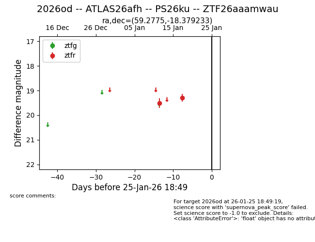
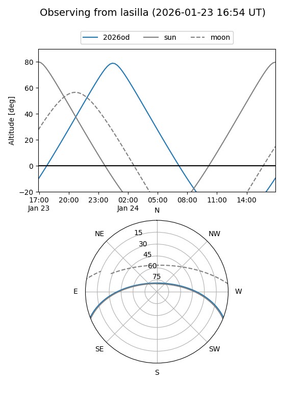
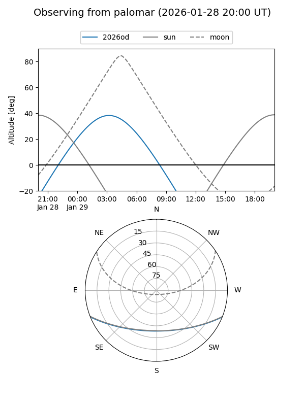

2026od
Target 2026od at 2026-01-24 21:56
Aliases and brokers:
FINK: link
Lasair: link
ALeRCE: link
TNS: link
YSE: link
alt names
ZTF26aaamwau (ztf,fink_ztf)
2026od (tns,yse)
ATLAS26afh (atlas)
PS26ku (panstarrs)
Coordinates:
equatorial (ra, dec) = 59.2775,-18.37923
equatorial (HMS+DMS) = 03:57:06.60,-18:22:45.24
galactic (l, b) = (211.4571,-46.55437)
Flags:
Photometry:
last ztfr=19.30
2 ztfr detections
Lightcurve

Visibility


Additional plots